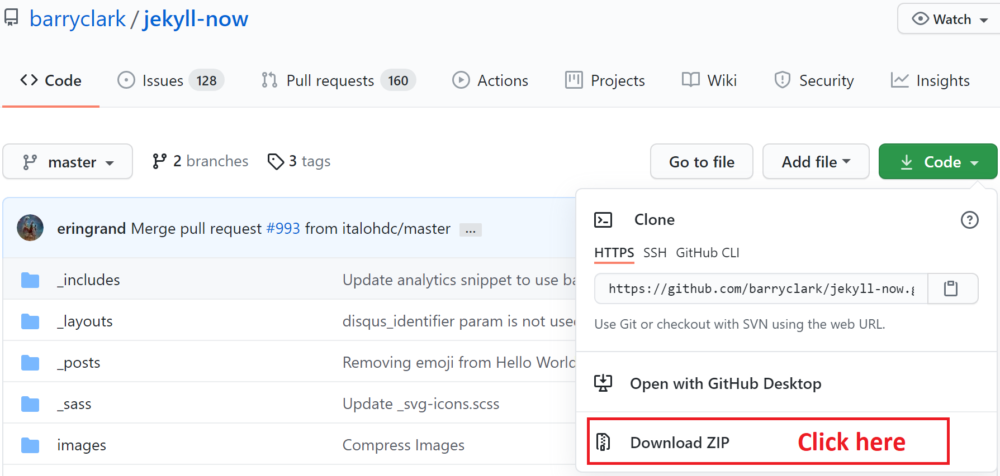
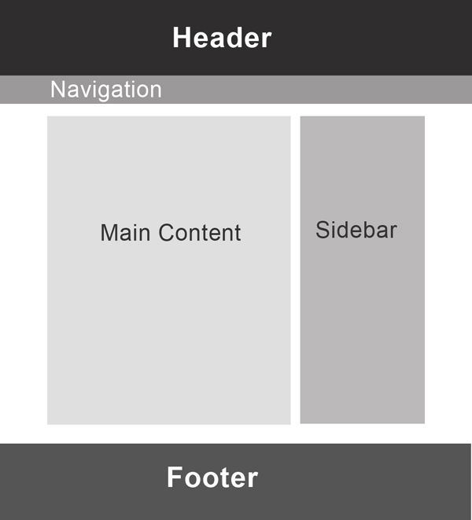

Jekyll Intermediate Workshop
Build and customize a website with Jekyll
Hello everyone, Welcome to this workshop on building and customizing a website using Jekyll.
This workshop will guide you to use Jekyll, a powerful static website generator, to build a website on your local machine and serve it on Github pages. In this workshop, we go beyond the material presented in the Introduction to Jekyll workshop, so if you are just starting to learn about making a website, you should absolutely take a look at that workshop as well. Here, we cover the basics but briefly and then explore templates and styles to customize your website using themes, Liquid templating language, and plugins.
My name is Shayan Fahimi. I am a PhD student in engineering and I started using Jekyll about 3 years ago to write documentation for a project. Since there was little customization in that project and more content development, I did not need to learn the basics of Jekyll then, and Jekyll helped me to develop the content very efficiently. But later, while building my personal website and helping friends I found Jekyll very powerful and straightforward.
I try to show you some of those capabilities today.
Land Acknowledgement
UBC Vancouver is located on the traditional, ancestral, and unceded territory of the xʷməθkʷəy̓əm (Musqueam), səl̓ilwətaɁɬ təməxʷ (Tsleil-Waututh), Stz’uminus, S’ólh Téméxw (Stó:lō), Skwxwú7mesh-ulh Temíx̱w (Squamish), and Coast Salish peoples.
Please take a moment to explore native-land.ca
But before going into more details I would like to begin by acknowledging that I am fortunate to present this workshop in Burnaby which is the unceded territory of the Coast Salish People.
I would like to ask you to also take a moment to explore this website and learn more about the land you are currently using and its historys.
Outline
Introduction
Installation
Building a Website
Blogging
Site Structure
Jekyll Plugins
Serving
This workshop is about building websites and we start by asking about your reasons for attending this workshop.
Then, we talk about Jekyll and review the installation process.
After installing Jekyll on your local machine, you have a few choices to build your first website.
We go over these choices and use one of them to build a website and explain the directory structure
in Jekyll. We talk about Jekyll built in capabilities for blogging and we explores themes, Liquid language, layouts and includes.
In this workshop we are not going to talk about HTML or CSS, but those are the basics of web development and you need to be familiar with them
for more serious web development projects.
Then, we talk about plugins that extend Jekyll built-in capabilities.
Finally, we learn about serving the website online using GitHub or other web hosting services.
I just send you some links to workshop content and slides. All of the content is available online.
Why do you need a website?
Use the chat box and let us know your goal for attending this workshop.
You can use Jekyll to build differnt types of websites. You can build an academic website and showcase your projects, resume, or your hobbies
You can build a personal website or a website that supports your projects and provide documentation or
examples. Please use the chat box to write your goal for attending this workshop and also let me know if you have already installed Jekyll on your
system using the instruction on workshop page or Jekyll documentation.
If you have not installed Jekyll on your system, that is fine and you can still benefit from attending this workshop. However, you probably cannot
try some of the activities on your system.
What is Jekyll?
Static website generator based on Ruby
Developed by Tom Preston-Werner
Fully integrated with GitHub
Jekyll is a popular website generator based on Ruby, which is designed to build static websites. Jekyll is developed by Tom Preston-Werner. Jekyll is fully integrated with GitHub and can be hosted for free on GitHub Pages.
Jekyll takes a template directory and runs it through two converters, Markdown and Liquid. The result is a complete static website, a bunch of HTML and CSS files, ready to be served online.
Static vs Dynamic
What is a static website and do we have any other types of websites?
Website generators are divided into two categories: Dynamic and Static. Static pages are pre-rendered, cached, and delivered to the user via a content delivery network (CDN). On the other hand, Dynamic pages are generated in real time when the user sends the request.
Dynamic websites are created and managed by a content management system that is installed on the Host, such as Drupal or Wordpress.
For example, consider Facebook. The landing page is different anytime you open the website and it depends on activities of the user and his/her friends.
Static websites are easier for the web browser to load and are great choices for personal blogs, academic websites, or simple business websites. They eliminate the complexity of creating and working with databases and do not have any unnecessary overhead. They are more secure
since we are not using any databases and no query means a faster page-loading time.
You can even write a static website all by hand but we usually offload some of this work to website generators.
To use static website generators, you are generally expected to use code-editors to build your website. Also, knowing a bit of CSS and HTML can help you to customize a theme for your website.
Static Websites
Templating language
Markup language
Use static websites for:
Documentation
Newsletter Contents
Landing Pages
Blogs
Static website are great options for publishing exactly all stored content to all users. Most of the static website generators use a templating language to build the layout of the
website, removing the need to repeat tasks over numerous webpages. Also, they use a lightweight markup language to support the creators write any contents without any special software or online tool.
Static Website generators take templates and combines them with specific information, content of a blog post, to generate full HTML pages for website visitors to see.
Note that when we use Jekyll to build a website, Jekyll is not actually running the live website, like wordpress. It helps us create the static site files and we can host them like any other
HTML website.
Let's Install Jekyll!
If you have not installed it on your system, please click on the link:
Installation
Now that we learned about static websites and the reasons to use them, let take the first step, Jekyll installation
If you only want to try Jekyll, you do not need to install it on your system. You can fork Jekyll now on GitHub and change some configuration to serve your website on GitHub pages.
You can even use GitHub GUI to write blog posts. This is all covered in the introduction to Jekyll workshop.
However, you cannot go further than that. Each tiny change needs to be committed on GitHub to show up in your website and you need to wait several minutes for GitHub to compile your codes
and update the website. Thus, you need to install Jekyll locally to accelerate development.
If you have not installed Jekyll yet, I am going to cover the installation briefly here. You can find a complete walkthrough in this link.
Installation
Verify the installation:
$ jekyll -v
You can still learn about Jekyll structure and tools without a running version on your system.
To install Jekyll on your system, first, you need to install two other programs. Jekyll is written in Ruby, an interpreted, high-level, general-purpose programming language. Therefore, you need to install it to run Jekyll and maintain your Jekyll website. Another program is RubyGems, which is a package manager for the Ruby programming language.
Jekyll is not officially supported by Windows, so it is recommended to use WSL to install Jekyll if you have windows 10. You can also use Ruby installer.
I want to invite you to follow Jekyll installation tutorial based on your operating system and if you have it already installed, try jekyll -v command to check the installation.
Again ...
Build
Jekyll Now is Jekyll's default theme.
Build a new website by typing these commands in the terminal:
$ jekyll new [name of blog]
$ jekyll serve
Open localhost: http://127.0.0.1:4000
If you do not have Jekyll installed: Download Jekyll Now

You can build a new boilerplate website with a default gem-based theme by navigating to a directory you would like to create your first project in and running
Jekyll will produce a bunch of HTML files in that directory and you can use jekyll serve to run the server locally. Jekyll serve the website on port 4000 of localhost.
If you do not have Jekyll on your local machine, just download Jekyll Now zip file and lets take a look at the files
Jekyll Now!
Other directories are kept as a gem in the Gemfile.
Jekyll Now is the default website configuration that Jekyll builds right now.
If those of you who built a new website locally compare the files in Jekyll Now built on your local machine with the GitHub version, you will find that a few directories are missing.
Its because new version of Jekyll now uses bundler to wrap the theme in the Gemfile. If you open Gemfile on the right side, you will find that a theme called
Minima is used in Jekyll Now
So what is a bundler? what is a gemfile? Those concepts are coming from Ruby
What is a Gemfile?
A Gemfile is used for describing gem dependencies for Ruby programs
Gems are used to distribute functionalities
If you have a Gemfile, you need to install bundler and ask bundler to serve Jekyll when you change the Gemfile
$ gem install bundler
$ bundle exec jekyll serve
If you want to stop serving your website locally, use Ctrl + C.
If you have a Gemfile in the directory of a Jekyll theme, you need to use Bundler to install all the gems before serving the website. Ruby gems are used to distribute functionalities among different sysem structures. Jekyll bundler is a gem that ensures compatibility of all the plugins across different environments with Jekyll installed on your system. You need to install Bundler after installing Jekyll
Then, you need to use bundle exec jekyll serve first time you serve the website. It tells jekyll to process plugins as well as website directory. Then, you will be able to open your website on port 4000 of local host.
If you want to stop serving your website locally, use Ctrl + C.
Instead of creating a new website using jekyll new, you can also clone a theme developed by community and use it as an start. If the theme comes with a Gemfile, you need to use bundler to serve it for the first time.
Themes
Jekyll themes provide community-maintained templates and styles for users to build their websites. While the basic Minima theme is very robust, you can choose themes from many free resources and themes are available for different purposes.
Activity 1
You can find Jekyll themes for various types of websites:
Check these websites and find a theme.
For the first activity, please find a Jekyll theme you like from one of these websites. You can clone or fork the themes available on GitHub. For other themes, you need to download and unzip them on your local machine. Then, serve it using Jekyll.
Remember that you need to install the gems used by third-party themes before serving them by running bundle exec jekyll serve the first time you serve them on your local machine.
Hyde
If you are not sure, use Hyde: https://github.com/poole/hyde
or Jekyll Now: https://github.com/barryclark/jekyll-now
We will use this theme to learn about other features of Jekyll.
The concepts work in other themes.
If you are interested to use themes other than [Minima], Hyde is a simple, two-column, and uncomplicated theme. We will use this theme for the rest of this workshop to demonstrate different tools and capabilities of Jekyll.
Remember to download Jekyll now from Github since that version has no hidden directory.
The concepts work in other themes as well so if you chose any other theme, that is absolutely fine
Site Structure
Lets dive into the site structure
The biggest difference between site generators is the tools and capabilities they offer to write, publish, and monitor your content. Jekyll has a standard structure to find the content of your website and put them in the right location. A Jekyll website usually has the following directory structure:
Site Structure
.
├── _config.yml
├── _data
│ └── members.yml
├── _drafts
│ ├── begin-with-the-crazy-ideas.md
├── _includes
| ├── footer.html
| └── header.html
├── _layouts
| ├── default.html
| └── post.html
├── _posts
| ├── 2021-05-23-why-I-chose-UBC.md
| ├── 2021-01-12-welcome-to-jekyll.md
├── _sass
| ├── _base.scss
| └── _layout.scss
├── _site
├── 404.html
├── about.md
├── .jekyll-cache
│ └── Jekyll
│ └── Cache
│ └── [...]
├── .jekyll-metadata
├── Gemfile
├── Gemfile.lock
└── index.html
_config.yml is a file that stores configuration data of your site including the site’s title, logo, description, admin’s email and much more. You can also specify information such as Twitter handler and Google Analytics code and later recall them wherever you need in other site pages.
_data can be populated with well-formatted data files (such as YAML .yml files) and access later in the site.data variable. For example, you can write your resume here and regularly update just this file.
_drafts is where you can keep draft posts. These posts follow the same format as your published posts. When they are ready to be published, you can easily drag and drop them into _posts folder, which stores the published posts.
_includes contains reusable content that can be mixed and matched by your layout and posts, such as the footer and header of your site.
_layouts are templates that wrap your website’s pages or posts. You can build different templates for different parts of your website. It is like the skeleton without any content, any muscle.
_posts contains all of your posts usually in Markdown format. The naming convention of these files is important and must follow the format: YEAR-MONTH-DAY-title.md.
_site is the directory that contains all the files generated by Jekyll. You should not add any files to this directory or delete them from it. You also do not need to sync this directory on GitHub or any other version control as they are built each time you run jekyll. If you are serving your website on other hosts, you only need to copy the files in this folder to the webserver and you are done.
You can also create other directories to organize the files you have.
_sass includes .sass files, an extension of CSS files, used to format the layout of webpages. You can also put an assets folder that contains images or pdf files.
.jekyll-cache and .jekyll-metadata are hidden folders that contain a cache of the generated pages for faster serving and keeps track of the files created by Jekyll and the one that has been modified since the site was last built. You do not need to modify these files or sync them on GitHub.
Then you have some static pages in the root directory.
index.html or index.md is the default landing page of your site.
404.html is the HTML file that will be shown when they are directed to a page on your site that does not exist.
Gemfile and Gemfile.lock stores all of the gem dependencies for your site.
.gitignore contains instructions for your source control system to ignore files/folders.
While this might look like a complex structure, it helps you and Jekyll to find the right files quickly and maintain your website more efficiently.
Lets see how
Blogging
Jekyll has built-in features for blogging
Jekyll is built for blogging. That is why it has a _posts folder and built-in features for parsing your posts and showing them properly on the screen
We have two types of webpages in Jekyll
Pages
Standalone content - have no dates
Landing page
About me
Resume
A sample.html file in the root directory is shown in {domain}/sample.html
You can also add Markdown files to build pages
The first type is pages. They are standalone content with no dates and can be used for a landing page, a resume page, or an about me page.
If you make an html or markdown file such as sample.html in the root directory, it will be shown on domain slash sample.html on your website.
Posts
Jekyll solution for blogging
The best practice is to use Markdown to write posts but you can also use HTML
Starts with Front matter
A valid post name must be in the format [year]-[month]-[day]-[post-name].md
The second type is posts. It is Jekyll solution for blogging.
The _posts folder is embedded in Jekyll to contain the blog posts of your site. The best practice is to use Markdown to write posts but you can also use HTML. The beginning of each post should include proper Front matter to show Jekyll that the .md file should be processed as a new post. A valid post name must be in the format [year]-[month]-[day]-[post-name].md
We will talk more about front matter today, but for now, it is that part inside the blue box.
Markdown
A markup language for creating formatted text using a plain-text editor
Headings:
Emphasis:
Links:
[I'm an inline-style link](https://www.google.com)
Images:
Inline-style:

Use Markdown Cheatsheet for more
Posts should be formatted in Markdown which is a markup language for creating formatted text using a plain-text editors. There are different Markdown flavours with different capabilities but the main syntax remains unchanged. Lets look at the syntax.
You can put headings and subheadings, you can make part of the sentence bold or italic by wraping them in double or single astricks. and you can add links or images.
HTML & CSS
Two of the core technologies for building webpages
HTML describes the structure of a web page using elements, e.g.
{{ page.title }} CSS describes the presentation of web pages e.g.
h1 {
font-size: 36px;
}
CSS files are commonly stored in _sass folder in Jekyll directory
When using Jekyll, you probably need to know a bit of HTML and CSS.
These are the two core technologies for building web pages
you define all the styles in one file and use those styles over your website.
Unless you are building a new theme, you do not need to know CSS
You need to know basic HTML elements to add or remove elements from a webpage. You can start by searching the skeleton of Jekyll theme to find the right elements and manipulating them to reach the desired outcome.
Activity 2
Open _posts directory in Hyde or Jekyll Now
Write a new post by following these steps:
Duplicate an old post
Rename the duplicated file (change dates and name of the file)
Change the title of your new post
Use Markdown to write the body of your new post (try adding links and images)
In the second activity, you are going to open posts folder in the theme you selected and study the content of the sample posts in that directory.
What information do you have in the front matter?
What markdown elements you can recognize?
Then, write a new post by duplicating the old post, renaming it following the naming conventions
change the front values such as the title of your post and use markdown elements
Liquid
Liquid is an open-source template language created by Shopify and written in Ruby.
Liquid Objects
Liquid Tags
Liquid Filters
You already saw Front matter.
Front matter is part of a templating language called Liquid. Jekyll uses Liquid templating language to process your site’s pages. To use Liquid in HTML or Markdown pages, you need to add “Front matter” notation at the beginning of your files. Liquid follows simple templating elements such as liquid objects tags and filter and helps you to add logic or supplemental content to your simple HTML or Markdown pages.
Liquid Objects
Objects contain the content that Liquid displays on a page.
To output content into a page, two curly braces are used e.g.
{{ site.title }}
Jekyll Workshop
Assume that you want to show your website title on each page and it might change over time. You can store it in a Liquid variable and then use
liquid objects to display them on a page.
To do that, you wrap the variable in two curly braces
In this case, Liquid is rendering the content of the title property of the site object, which contains the text Jekyll Workshop.
You can build and populate variables by putting them in front matter or config file.
Liquid Tags
Tags create programming logic and control flow for templates.
To perform logic statements or run a loop, curly braces are used with a percentage sign on each side e.g.
{% if user %}
Hello {{ user.name }}!
{% endif %}
Hello Adam!
For example, in this if statement, if the user object exists, a message with the user name will be shown on the screen.
Liquid Filters
Filters change the output of a Liquid object or variable.
You can use filters to change strings or manipulate a list of items.
{{ "How many characters are in this string?" | size }}
39
We separate filters and variables with a pipe sign. There are many filters available in liquid. For example, size shows the number of characters in a string.
Front Matter
It guides Jekyll to parse your Markdown files and put content in the right place
Use YAML format wrapped between triple-dashed lines
Open any of the files in _posts directory:
---
layout: post
title: Blogging Like a Hacker
---
Now open page.html in the _layout directory:
---
layout: default
---
{{ page.title }}
{{ content }}
Front matter guides Jekyll to parse your Markdown files and put content in the right place and contains information about your webpage. Front matter must take the format of valid YAML or JSON wrapped between triple-dashed lines. When Jekyll finds this information in your files, it processes them differently. The front matter must be the first thing in your file.
For example, if you open any files in the posts directory you will see a front matter like this. when Jekyll parse a post, it finds the layout of the post and the title and populate variables page.layout and page.title
Now, if you open the layout for this post, you can see the variable page.title previously being populated by Jekyll is shown at the top.
Also, you can see content, which is another global variable and contains all the content of a webpage parsed using the markdown file.
what is this layout then?
Layouts

Jekyll later fills each section with the content of Markdown files, following the instructions of Front matter.
When browsing a website, many sections stay the same across multiple pages. Layouts in Jekyll give you an easy solution to use an html file across your website and fill it with different contents. You have seen one of them just in the previous section. Jekyll uses that
layout, fills it with the contents of your posts and generates different html files for each post.
Layouts
Open default.html in _layouts directory:
Later, we will learn how to ask Jekyll to put Markdown content in this layout.
Lets look at another example:
In Jekyll Now it looks like this. You will see similar structure in other themes as well.
The file starts with elements that declare the type and language of the file. Here, we are not using Front matter since the file is not inheriting any other layouts. The "head" element of the html file is replaced with an include file. We learn more about them in the next section. In the "body" element, the sidebar is created by another include file. The content will be replaced after interpreting the .md files.
Layouts can inherit the structure of other layouts and build on top of them. For example, page.html layout inherits default layouts and adds its content on the right place.
Includes
Reusable components - Snippets of code that we want to use over multiple pages, such as:
Google analytics tags
Headers and Footers
Media Frames
Sidebars
Comment systems
Includes let you to use all reusable components in a directory and use Jekyll tags to import the components as needed.
Jekyll includes are helpful for putting social media tags, google analytics tags, headers and footers, media frams, sidebars and much more.
Includes
Let's look at the content of head.html in _includes :
Lets look at the content of head.html file which default used.
The content of this file replaces the head section of all HTML files in Hyde. In the title section, you can find a conditional statement that changes the value in title tag based on your location on the website.
Includes
Includes can be used in other web pages via Liquid tags:
{% include head.html %}
We can also pass parameters to include:
VIDEO
{% include youtube.html youtube_id="xtMBD1P3tz0" %}
We can easily put includes in the Markdown or HTML files via liquid tags. Also, we can pass parameters to includes. This is useful when you have created a frame for showing the content
but you want to change the content based on the location in your website.
Variables
Jekyll creates variables and assigns values to them by looking at 3 locations:
_config.yml files in _data directory
Front matter of Markdown files
_config.yml files in _posts directory
site.title, site.url
page.title, page.date
The title in the file name will be stored in .title of site.posts object while the title in the Front matter of the post is stored in page.title .
So you have already seen lots of Jekyll variables.
When Jekyll processes your site, it looks for data in the Front matter, _config.yml, and _data files to assign values to variables. The data in the Front matter of each page will be stored in page global variable while data in _config.yml is stored in site global variable.
So site.title contains your site title and is created using config file while page.title contains the title of each page and is filled using the front matter.
There are many other standard variables that Jekyll builds and you can find a list of them in Jekyll documentation. One of the most important objects is site.posts that has the content of all of your posts. The title handle for this object is filled using the file names instead of
the data in front matter.
_config.yml
A YAML file with data in the format of key:value
You can also create your own variables by defining them in the Front matter or _config.yml and later using them in Liquid tags.
and finally lets look at a config file. A standard config has the settings and some website information such as the title, url, authors name and so on.
and like front matter, it has a key:value structure.
Activity 3
If your group number if an odd number, solve Exercise 1
and if it is an even number, solve Exercise 2
Jekyll Plugins
Jekyll plugins extend the capabilities of Jekyll
Jekyll-scholar is for the academic blogger to format the bibliographies and reading lists for the web.Jekyll Picture Tag automates the process of making your figures across all different browsers and devices.Jekyll Feed plugin generates an RSS-like feer of your Jekyll posts.Jekyll Sitemap Generator Plugin silently generates a sitemaps.org compliant sitemap for your Jekyll site.Jekyll does not support commenting but you can use community platforms such as Disqus .
If you plan to serve your website on GitHub Pages, make sure that the plugins you are using are supported by GitHub Pages
Serve and Deployment
To serve a website online, you need a domain and a host. Comparing it to your house, domain is the postal address while host is the actual house. If you want to invite somebody for dinner, you need to give them the address to find your house.
Web hosting is the storage location where the content of your website is placed. You can use domain registrar to buy a domain and these companies usually sell the domain and host together as a bundle. Since Jekyll is a static website generator
and eventualy produces a bunch of html files, you have many options to serve your website.
GitHub Pages
Free host with a GitHub domain
Other options
Jekyll generates your static site to the _site directory by default. You can transfer the contents of this directory via FTP or any other file transfer method to almost any hosting provider.
More from the Research Commons at (UBC-V)